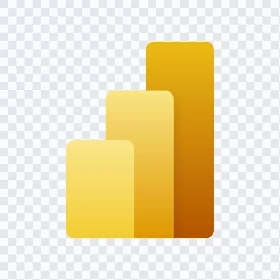
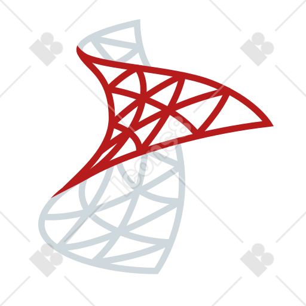
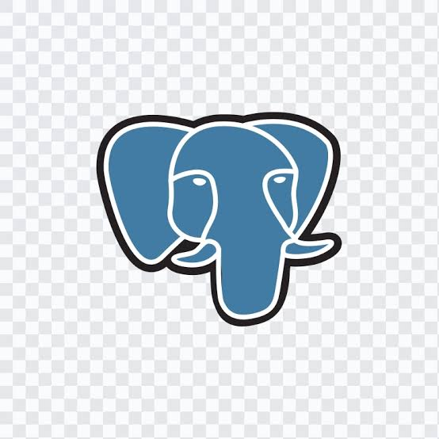
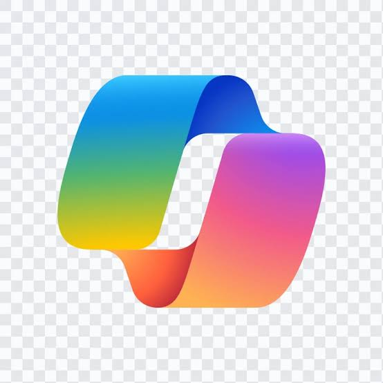
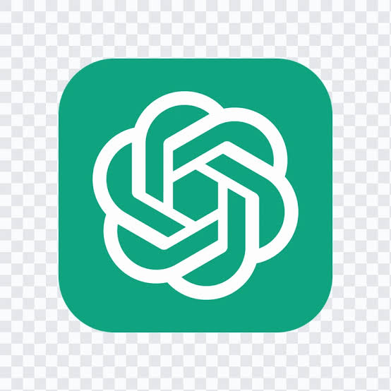
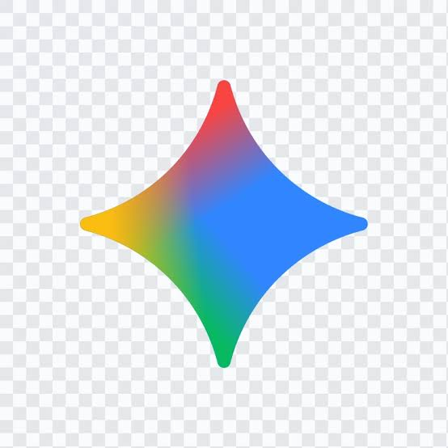
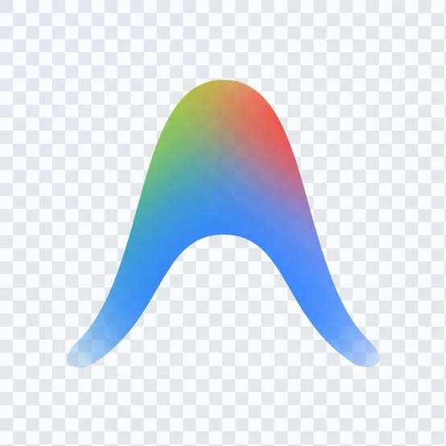

I am Tejas Waghmare Data Analyst
Transforming complex datasets into executive clarity, high-ROI business intelligence, and scalable data models.

Marketplace Revenue Analyzed
Evaluated 30,259 NYC listings & 980K+ reviews across 5 boroughs using SQL & Power BI.
View Case Study →End-to-End Analytics Workflow
Architecting predictable, scalable data models that turn raw data into board-ready insights.
Waste & Profit Optimization
Diagnosed 16.5K transactions to pinpoint 40% waste cost leakages and restore gross margins.
View Analysis →Analytical Precision, Business Focus.
A snapshot of my background, journey, and professional data philosophy.
Passionate Data Analyst dedicated to uncovering patterns, telling compelling data stories, and driving business growth through analytics.
With a strong engineering foundation (B.Tech Mechanical Engineering, CGPA 8.04), I approach business challenges with scientific rigor. I bridge the gap between complex raw data systems and non-technical stakeholders, creating intuitive dashboards and reproducible ETL workflows.
Data Analyst Intern
Feb 2026 – Mar 2026- Built interactive Power BI dashboards, transforming raw data into actionable business insights for decision-making.
- Completed an intensive 20-hour curriculum covering data modeling, DAX, visualization best practices, and real-world BI use cases.
Project Engineer
Sep 2025 – Dec 2025- Automated Excel KPI dashboards (Pivot Tables, XLOOKUP) and developed real-time Power BI reports for executive reporting.
- Improved data integrity via cleaning, validation, and preprocessing in ERP systems; identified systemic efficiency bottlenecks.
Graduate Trainee Engineer — Emerging Tech
Nov 2025- Hands-on data analysis and visualization using Power BI, Excel, and SQL to derive actionable insights from industrial datasets.
- Studied foundational AI & Machine Learning concepts including supervised predictive modeling for business intelligence.

I build interactive dashboards with DAX measures, star schema models, and executive KPI reports.
Unified SaaS analytics platform for lakehouses, OneLake shortcuts, Medallion architecture, and scalable pipelines.

I write optimized T-SQL queries, joins, CTEs, indexing, and stored procedures to transform business data.

I use it for advanced analytical queries, complex window functions, and relational data modeling.
My daily development environment for writing SQL, Python scripts, version control, and analytics code.

I use it for AI-assisted coding, auto-completing complex SQL logic and Python data pipelines.
I leverage Claude for deep query debugging, architectural explanations, documentation, and data logic.

I use it for brainstorming data modeling strategies, generating DAX/Excel formulas, and summarizing insights.

I use it for multimodal data interpretation, fast technical research, and cross-validating patterns.
Automating visual workflows, data orchestration, and generating visual content for presentations.

Agentic AI coding and pair-programming environment used to prototype data projects and build web interfaces.
Central knowledge hub for documenting data dictionaries, sprint planning, project trackers, and notes.
Featured Analytics Projects.
Real-world business intelligence dashboards, star-schema data models, and empirical data analysis.
NYC Airbnb Intelligence
Power BI + SQL
NYC Airbnb Hospitality Marketplace Intelligence
Comprehensive market intelligence dashboard analyzing 30,259 listings across 16,441 hosts and 980K+ customer reviews. Features interactive filters across 5 NYC boroughs, 4 room categories, and Superhost tiers.
Bakery Sales Analytics
Excel Power Pivot
Bakery Sales, Profitability & Waste Analytics
Conducted deep-dive financial analysis on 16,569 bakery transactions (2023–2024) across 3 store locations. Uncovered that waste cost accounted for 40% of revenue and unchecked discounting caused a -6.7% operational loss.
Core Competencies.
Tools, programming languages, and analytical frameworks applied to enterprise data.
BI & Data Visualization
Executive Reporting & DashboardsData Modeling & Analytics
Spreadsheet & Semantic ModelingProgramming & SQL
Query Engineering & ScriptsEnterprise Ecosystem
Microsoft Fabric & ERP DataVerified Digital Badges.
Microsoft certified credentials verified via Credly registry.
Power BI Data Analyst
PL-300
Power BI Data Analyst Associate
Certification Code: PL-300Validates technical skills in data preparation, modeling, visualization, DAX measures, and asset management in Power BI service.
Fabric Analytics Engineer
DP-600
Fabric Analytics Engineer Associate
Certification Code: DP-600Demonstrates proficiency in designing, creating, and maintaining analytics solutions in Microsoft Fabric, including lakehouses and data warehouses.
Fabric Data Engineer
DP-700
Fabric Data Engineer Associate
Certification Code: DP-700Validates enterprise skills in planning, implementing, and securing end-to-end data transformation pipelines within Microsoft Fabric architectures.
Official Certifications.
Verified credentials and proofs of completion with direct verification links.
Power BI Data Analyst
PL-300
Power BI Data Analyst Associate (PL-300)
Certified in data modeling, DAX measure creation, high-impact dashboard architecture, and report workspace deployment.
Fabric Analytics Engineer
DP-600
Fabric Analytics Engineer Associate (DP-600)
Certified in lakehouse analytics, semantic models, data pipelines, and transforming enterprise data using Microsoft Fabric.
Fabric Data Engineer
DP-700
Fabric Data Engineer Associate (DP-700)
Certified in enterprise data ingestion, pipeline security, data warehouse schemas, and scalable Fabric data lake environments.
Python for Data Science
Data Science & ML
Python for Data Science and Machine Learning
Hands-on training in Pandas, NumPy, Matplotlib, exploratory data analysis, and predictive statistical modeling techniques.
Educational Timeline.
A chronological progression of academic qualifications, numerical modeling, and engineering foundations that formed my quantitative and analytical mindset.
Bachelor of Technology (B.Tech) — Mechanical Engineering
Comprehensive 4-year engineering curriculum with rigorous emphasis on numerical mathematics, computational analysis, physical system dynamics, and data-driven optimization. Cultivated advanced quantitative logic and structural discipline applied directly to modern business intelligence pipelines and high-volume relational modeling.
Higher Secondary Certificate (HSC) — Information Technology Specialization
Specialized higher secondary track fusing core physical sciences with elective Information Technology. Introduced fundamental computing principles, logic gates, binary representations, algorithmic flowcharts, and procedural programming basics that sparked my passion for software and data systems.
Secondary School Certificate (SSC) — High Distinction
Graduated with distinguished honors (81.80%), demonstrating consistent academic excellence across core disciplines. Achieved top marks in Mathematics and Physical Sciences, laying the baseline analytical curiosity and systematic problem-solving approach.
Personal Interests & Hobbies.
The passions that fuel my creativity, strategic curiosity, and continuous learning.
Let's build
something.
Have an analytics project, business intelligence challenge, or an opportunity? Click the heading above or tap below to open the contact form and start a conversation.